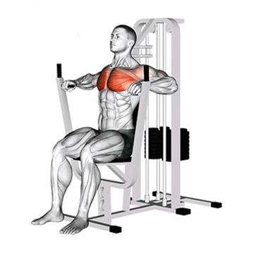

Estrada do Puxa Ferro, 12
Tel: (21) 91234-5678
contato@halterhabit.com.br
| Alguns dos Nossos Equipamentos | ||
|---|---|---|

|
Cadeira Extensora | |
| O principal movimento articular realizado na cadeira extensora é a extensão do joelho, portanto o quadricepes (vasto lateral, vasto medial, vasto intermédio e reto femoral) são os principais músculos trabalhados durante o exercício. [fonte] | ||
| Supino Vertical |  | |
| O supino vertical é um exercício popular e eficaz para desenvolver força, tamanho e definição nos músculos da parte superior do corpo. Ao usar uma máquina de peso guiada, este exercício oferece uma maneira acessível e controlada de direcionar os músculos do peito, ombros e tríceps. [fonte] | ||

|
Remada Baixa de Triângulo | |
| A Remada Baixa é um exercicio de máquina para costas feito sentado no banco usando a barra triângulo. A Remada trabalha inúmeros músculos como o lombar, latíssimo do dorso, trapézio, deltoide posterior e até mesmo o braquiorradial. [fonte] | ||